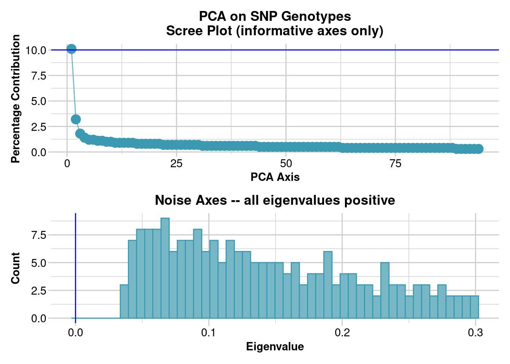

library(dartRverse)
library(hierfstat)6 Management of Small Populations
Session Presenters
Written by Kate Farquharson with input from Catherine Grueber.
Required packages
make sure you have the packages installed, see Install dartRverse
Load data and explore
The data is a subset of the genome-wide SNPs that are publicly available from the following study, Farquharson et al. (2022).
The study aims were to investigate:
- The current genetic diversity of Tasmanian devils across their entire range
- Whether the genetic diversity of the insurance population is representative of the species
Questions
- How many SNPs are there?
- How many individuals are in the dataset?
- What is the distribution of individuals in populations?
load("./data/session6_gl.Rdata")
gl /// GENLIGHT OBJECT /////////
// 300 genotypes, 1,663 binary SNPs, size: 1 Mb
35182 (7.05 %) missing data
// Basic content
@gen: list of 300 SNPbin
@ploidy: ploidy of each individual (range: 2-2)
// Optional content
@ind.names: 300 individual labels
@loc.names: 1663 locus labels
@loc.all: 1663 alleles
@pop: population of each individual (group size range: 20-20)
@other: a list containing: loc.metrics loc.metrics.flags verbose history ind.metrics summary(gl@pop) Bronte Buckland Fentonbury ForestierMurdunna
20 20 20 20
GranvilleHarbour IP Kempton MariaIsland
20 20 20 20
Narawntapu RobbinsIsland SilverPlains StonyHead
20 20 20 20
TasmanPeninsula Woolnorth wukalina
20 20 20 Allocate colours to populations
Allocate colours based on site location: East / Central / West Tasmania and captive breeding program.
levels(gl@pop) [1] "Bronte" "Buckland" "Fentonbury"
[4] "ForestierMurdunna" "GranvilleHarbour" "IP"
[7] "Kempton" "MariaIsland" "Narawntapu"
[10] "RobbinsIsland" "SilverPlains" "StonyHead"
[13] "TasmanPeninsula" "Woolnorth" "wukalina" #west = yellow; central = blue; east = green; insurance population/Maria Island = orange
tascols <- c("skyblue", "#74c476", "skyblue", "#74c476", "#FDD835", "orange", "skyblue",
"orange", "skyblue", "#FDD835", "skyblue", "#74c476", "#74c476", "#FDD835",
"#74c476")Report minor allele frequency (MAF)
Questions
- Do you notice any patterns in minor allele frequency?
- Are there differences between the overall MAF distribution and that of individual populations?
gl.report.maf(gl)`stat_bin()` using `bins = 30`. Pick better value with `binwidth`.Visualise population structure by PCoA
Run the PCoA, with points shaded by locations.
Questions
- How would you describe any patterns in population structure?
- How does the population structure of the insurance population (orange) compare to that of the wild?
pcoa <- gl.pcoa(gl)Starting gl.pcoa
Processing genlight object with SNP data
Performing a PCA, individuals as entities, loci as attributes, SNP genotype as state
Starting gl.colors
Selected color type 2
Completed: gl.colors 
Completed: gl.pcoa gl.pcoa.plot(pcoa, gl)Starting gl.pcoa.plot
Processing an ordination file (glPca)
Processing genlight object with SNP data
Plotting populations in a space defined by the SNPs
Preparing plot .... please wait
Completed: gl.pcoa.plot 
#visualise PCoA using the colour groupings of east/central/west/insurance population
gl.pcoa.plot(pcoa, gl, pt.colors=tascols)Starting gl.pcoa.plot
Processing an ordination file (glPca)
Processing genlight object with SNP data
Plotting populations in a space defined by the SNPs
Preparing plot .... please wait
Completed: gl.pcoa.plot 
Calculate allelic richness for each population
This calculation requires the hierfstat package, so make sure the hierfstat is loaded using the library function.
#convert the genlight object to genind format
gi <- gl2gi(gl)Starting gl2gi
Processing genlight object with SNP data
Matrix converted.. Prepare genind object...
Completed: gl2gi #convert genind object to hierfstat format
hfstat <- genind2hierfstat(gi)
#calculate allelic richness
ar <- allelic.richness(hfstat)
names(ar)[1] "min.all" "Ar" ar$min.all # rarefied to 12, the smallest sample size for a genotyped locus[1] 12summary(ar$Ar) #gives mean AR for each population Bronte Buckland Fentonbury ForestierMurdunna
Min. :1.000 Min. :1.000 Min. :1.000 Min. :1.000
1st Qu.:1.000 1st Qu.:1.000 1st Qu.:1.000 1st Qu.:1.000
Median :1.692 Median :1.717 Median :1.692 Median :1.538
Mean :1.558 Mean :1.578 Mean :1.549 Mean :1.506
3rd Qu.:1.982 3rd Qu.:1.985 3rd Qu.:1.983 3rd Qu.:1.975
Max. :2.000 Max. :2.000 Max. :2.000 Max. :2.000
GranvilleHarbour IP Kempton MariaIsland
Min. :1.000 Min. :1.000 Min. :1.000 Min. :1.000
1st Qu.:1.000 1st Qu.:1.000 1st Qu.:1.000 1st Qu.:1.000
Median :1.538 Median :1.717 Median :1.692 Median :1.588
Mean :1.508 Mean :1.588 Mean :1.575 Mean :1.537
3rd Qu.:1.977 3rd Qu.:1.981 3rd Qu.:1.985 3rd Qu.:1.975
Max. :2.000 Max. :2.000 Max. :2.000 Max. :2.000
Narawntapu RobbinsIsland SilverPlains StonyHead
Min. :1.000 Min. :1.000 Min. :1.000 Min. :1.000
1st Qu.:1.000 1st Qu.:1.000 1st Qu.:1.000 1st Qu.:1.000
Median :1.648 Median :1.300 Median :1.668 Median :1.562
Mean :1.535 Mean :1.402 Mean :1.555 Mean :1.505
3rd Qu.:1.986 3rd Qu.:1.936 3rd Qu.:1.984 3rd Qu.:1.977
Max. :2.000 Max. :2.000 Max. :2.000 Max. :2.000
TasmanPeninsula Woolnorth wukalina
Min. :1.000 Min. :1.000 Min. :1.000
1st Qu.:1.000 1st Qu.:1.000 1st Qu.:1.000
Median :1.316 Median :1.300 Median :1.668
Mean :1.466 Mean :1.443 Mean :1.550
3rd Qu.:1.981 3rd Qu.:1.948 3rd Qu.:1.976
Max. :2.000 Max. :2.000 Max. :2.000 ar <- as.data.frame(ar$Ar)
mean.ar <- colMeans(ar)Calculate a measure of variance for allelic richness, e.g. standard error. Standard error = standard deviation / sqrt(n), where n is the number of genotyped loci
sd(ar$Bronte, na.rm=TRUE)/sqrt(nrow(ar) - length(which(is.na(ar$Bronte))))[1] 0.01017173Boxplot of allelic richness per population:
Questions
- Which populations have the highest and the lowest allelic richness?
- Can you think of any explanation?
#first, extend the margins of the graphing window to fit long axis labels
par(mar=c(8,3,3,3))
boxplot(ar, ylab="Allelic richness", las=2, col=tascols)#order boxplot to group locations by west, central, east, insurance population
ar.ordered <- ar[,c(10, 14, 5, 1, 3, 11, 9, 7, 13, 4, 12, 15, 2, 6, 8)]
tascols.ordered <- tascols[c(10,14,5,1,3,11,9,7,13,4,12,15,2,6,8)]
boxplot(ar.ordered, ylab="Allelic richness", las=2, col=tascols.ordered)
Calculate heterozygosity statistics for each population
The function gl.report.heterozygosity reports the observed, expected, and unbiased heterozygosities and Fis (inbreeding coefficient) by population or the observed heterozygosity for each individual in a genlight object.
Calculate heterozygosity and inbreeding statistics for each population. Note that the plot is ordered by default from lowest to highest heterozygosity.
Questions
- Which populations have the highest and lowest heterozygosity?
- Within a population, do you notice any patterns of observed compared to expected heterozygosity from the graph?
- What about Fis?
#use the ? to search the help for a function and see what options can be specified
#?gl.report.heterozygosity
hets <- gl.report.heterozygosity(gl, method="pop",plot.colors.pop = tascols)Starting gl.report.heterozygosity
Processing genlight object with SNP data
Calculating Observed Heterozygosities, averaged across
loci, for each population
Calculating Expected Heterozygosities pop n.Ind n.Loc n.Loc.adj polyLoc monoLoc
Bronte Bronte 18.02285 1663 1 1178 485
Buckland Buckland 18.71257 1663 1 1192 471
Fentonbury Fentonbury 17.15394 1663 1 1131 532
ForestierMurdunna ForestierMurdunna 18.42694 1663 1 1050 613
GranvilleHarbour GranvilleHarbour 18.59952 1663 1 1058 605
IP IP 19.15695 1663 1 1239 424
Kempton Kempton 19.31209 1663 1 1215 448
MariaIsland MariaIsland 18.28322 1663 1 1151 512
Narawntapu Narawntapu 17.49008 1663 1 1108 555
RobbinsIsland RobbinsIsland 19.25376 1663 1 858 805
SilverPlains SilverPlains 18.55081 1663 1 1160 503
StonyHead StonyHead 18.78593 1663 1 1042 621
TasmanPeninsula TasmanPeninsula 19.17739 1663 1 962 701
Woolnorth Woolnorth 19.57547 1663 1 935 728
wukalina wukalina 18.34275 1663 1 1160 503
all_NALoc Ho HoSD HoSE He HeSD
Bronte 0 0.179996 0.183418 0.004498 0.191019 0.181399
Buckland 0 0.197586 0.190966 0.004683 0.198461 0.180158
Fentonbury 0 0.182757 0.191409 0.004694 0.187777 0.181461
ForestierMurdunna 0 0.176872 0.199446 0.004891 0.172591 0.180186
GranvilleHarbour 0 0.168749 0.187710 0.004603 0.176181 0.183623
IP 0 0.195225 0.183868 0.004509 0.200251 0.179103
Kempton 0 0.191338 0.186795 0.004581 0.197628 0.181002
MariaIsland 0 0.172589 0.181246 0.004444 0.179993 0.177912
Narawntapu 0 0.190309 0.201556 0.004943 0.185845 0.184629
RobbinsIsland 0 0.138154 0.186892 0.004583 0.139935 0.179352
SilverPlains 0 0.184496 0.189312 0.004642 0.191562 0.182624
StonyHead 0 0.178307 0.199528 0.004893 0.176730 0.184918
TasmanPeninsula 0 0.171776 0.203659 0.004994 0.166905 0.187410
Woolnorth 0 0.151634 0.187370 0.004595 0.151784 0.178359
wukalina 0 0.178577 0.183757 0.004506 0.187558 0.180554
HeSE uHe uHeSD uHeSE FIS FISSD FISSE
Bronte 0.004448 0.196470 0.186575 0.004575 0.065498 0.248832 NA
Buckland 0.004418 0.203909 0.185104 0.004539 0.027938 0.223972 NA
Fentonbury 0.004450 0.193414 0.186909 0.004583 0.048542 0.241005 NA
ForestierMurdunna 0.004418 0.177405 0.185211 0.004542 0.015203 0.252059 NA
GranvilleHarbour 0.004503 0.181048 0.188696 0.004627 0.058696 0.248559 NA
IP 0.004392 0.205617 0.183903 0.004510 0.036454 0.215288 NA
Kempton 0.004439 0.202880 0.185813 0.004556 0.041341 0.228187 NA
MariaIsland 0.004363 0.185054 0.182914 0.004485 0.049162 0.235558 NA
Narawntapu 0.004527 0.191314 0.190062 0.004661 0.005557 0.227638 NA
RobbinsIsland 0.004398 0.143666 0.184133 0.004515 0.034448 0.232899 NA
SilverPlains 0.004478 0.196868 0.187683 0.004602 0.055302 0.239884 NA
StonyHead 0.004535 0.181563 0.189975 0.004659 0.018753 0.236655 NA
TasmanPeninsula 0.004596 0.171373 0.192427 0.004719 0.007672 0.237243 NA
Woolnorth 0.004374 0.155763 0.183034 0.004488 0.023129 0.227312 NA
wukalina 0.004428 0.192814 0.185614 0.004552 0.059040 0.251719 NA
Completed: gl.report.heterozygosity We can use the same function, but switch the method from “pop” to “ind” to calculate individual-level observed heterozygosity. This can be useful if you are investigating invidiual-level diversity, and may also be useful in assessing the impact of sample quality and missing data on your results.
Question
- What are some possible explanations for outliers with low individual observed heterozygosity?
ind.hets <- gl.report.heterozygosity(gl, method="ind")Starting gl.report.heterozygosity
Processing genlight object with SNP data
Calculating observed heterozygosity for individuals
Note: No adjustment for invariant loci (n.invariant set to 0)
Starting gl.colors
Selected color type 2
Completed: gl.colors ind.name Ho f.hom.ref f.hom.alt n.Loc
F_ForestierMurdunna_4 0.17416830 0.00000000 0.8258317 1533
M_ForestierMurdunna_5 0.19986720 0.03984064 0.7602922 1506
M_ForestierMurdunna_2 0.12183436 0.07323751 0.8049281 1461
F_ForestierMurdunna_8 0.15145228 0.06431535 0.7842324 1446
M_ForestierMurdunna_4 0.20176630 0.04211957 0.7561141 1472
F_ForestierMurdunna_1 0.21088435 0.03945578 0.7496599 1470
F_ForestierMurdunna_6 0.13034623 0.06992532 0.7997284 1473
M_ForestierMurdunna_7 0.18199737 0.04664915 0.7713535 1522
F_ForestierMurdunna_7 0.15210140 0.06470981 0.7831888 1499
M_MariaIsland_10 0.13666667 0.06466667 0.7986667 1500
F_ForestierMurdunna_5 0.17647059 0.04464918 0.7788802 1411
M_ForestierMurdunna_3 0.15633423 0.05997305 0.7836927 1484
F_MariaIsland_101 0.20630019 0.04570723 0.7479926 1619
M_MariaIsland_1 0.21591610 0.05120296 0.7328809 1621
M_MariaIsland_102 0.19385194 0.04893350 0.7572146 1594
M_MariaIsland_101 0.18607595 0.06139241 0.7525316 1580
M_MariaIsland_103 0.17841270 0.06476190 0.7568254 1575
U_Buckland_10 0.22365196 0.05392157 0.7224265 1632
U_Buckland_12 0.21782178 0.05693069 0.7252475 1616
U_Buckland_14 0.21113831 0.05936353 0.7294982 1634
U_Buckland_15 0.20519159 0.06427689 0.7305315 1618
U_Buckland_16 0.14285714 0.10518053 0.7519623 1274
U_Buckland_18 0.21723077 0.05107692 0.7316923 1625
U_Buckland_19 0.21568627 0.04289216 0.7414216 1632
F_ForestierMurdunna_3 0.18404118 0.04633205 0.7696268 1554
F_IP_10 0.16167665 0.06719894 0.7711244 1503
M_ForestierMurdunna_1 0.18642993 0.04375396 0.7698161 1577
M_ForestierMurdunna_6 0.17256637 0.06005057 0.7673831 1582
M_ForestierMurdunna_8 0.15786040 0.05936073 0.7827789 1533
M_IP_1 0.19079755 0.06196319 0.7472393 1630
M_MariaIsland_100 0.15374593 0.06905537 0.7771987 1535
M_MariaIsland_104 0.17524510 0.06372549 0.7610294 1632
U_Woolnorth_1 0.15837937 0.07612032 0.7655003 1629
U_Woolnorth_2 0.17460317 0.05433455 0.7710623 1638
U_Woolnorth_3 0.13292308 0.07876923 0.7883077 1625
U_Woolnorth_4 0.14769231 0.08492308 0.7673846 1625
U_Woolnorth_5 0.14628150 0.06945298 0.7842655 1627
U_Woolnorth_10 0.14972274 0.06962415 0.7806531 1623
U_Woolnorth_11 0.16002491 0.06911582 0.7708593 1606
U_Woolnorth_12 0.16469857 0.07147296 0.7638285 1609
U_Woolnorth_13 0.15136476 0.06513648 0.7834988 1612
U_Woolnorth_14 0.16594695 0.07896360 0.7550895 1621
U_Woolnorth_15 0.16717886 0.07621389 0.7566073 1627
U_Woolnorth_16 0.15040398 0.08390305 0.7656930 1609
U_Woolnorth_17 0.16717886 0.06637984 0.7664413 1627
U_ForestierMurdunna_1 0.19389027 0.06795511 0.7381546 1604
U_TasmanPeninsula_1 0.17458359 0.06539173 0.7600247 1621
U_TasmanPeninsula_2 0.20858896 0.04846626 0.7429448 1630
U_TasmanPeninsula_3 0.16369231 0.05292308 0.7833846 1625
U_TasmanPeninsula_4 0.14108142 0.07520199 0.7837166 1609
U_TasmanPeninsula_5 0.20000000 0.04135802 0.7586420 1620
U_TasmanPeninsula_6 0.18164910 0.05021699 0.7681339 1613
U_TasmanPeninsula_7 0.17650677 0.05473555 0.7687577 1626
U_TasmanPeninsula_10 0.09591584 0.09467822 0.8094059 1616
U_TasmanPeninsula_11 0.18734491 0.05210918 0.7605459 1612
M_IP_101 0.19631902 0.06012270 0.7435583 1630
M_IP_100 0.19159456 0.06613103 0.7422744 1618
F_IP_104 0.21136225 0.04276115 0.7458766 1637
F_IP_106 0.23870574 0.05067155 0.7106227 1638
M_IP_107 0.22167183 0.05077399 0.7275542 1615
F_IP_100 0.20158343 0.05846529 0.7399513 1642
M_IP_105 0.21340713 0.05535055 0.7312423 1626
F_IP_102 0.20599022 0.06662592 0.7273839 1636
F_IP_103 0.20689655 0.06958128 0.7235222 1624
M_IP_102 0.23967961 0.05237215 0.7079482 1623
M_IP_103 0.16656461 0.06674832 0.7666871 1633
F_IP_101 0.18571429 0.05652174 0.7577640 1610
F_IP_105 0.19975490 0.06004902 0.7401961 1632
F_IP_107 0.19378428 0.05362584 0.7525899 1641
M_IP_106 0.19531731 0.06592730 0.7387554 1623
M_IP_104 0.19583843 0.06854345 0.7356181 1634
F_Narawntapu_11 0.18839676 0.06550218 0.7461011 1603
F_Narawntapu_12 0.21589487 0.05193992 0.7321652 1598
F_Narawntapu_13 0.20415879 0.05040958 0.7454316 1587
F_Narawntapu_15 0.20000000 0.07586207 0.7241379 1595
F_Narawntapu_16 0.20312500 0.05750000 0.7393750 1600
F_Narawntapu_17 0.19328264 0.05830165 0.7484157 1578
F_Narawntapu_18 0.18730554 0.04729309 0.7654014 1607
F_RobbinsIsland_3 0.12991128 0.07287706 0.7972117 1578
F_RobbinsIsland_6 0.13215859 0.08999371 0.7778477 1589
M_Narawntapu_12 0.21695130 0.04996837 0.7330803 1581
M_Narawntapu_13 0.19397363 0.04770873 0.7583176 1593
M_Narawntapu_14 0.17553957 0.05611511 0.7683453 1390
M_RobbinsIsland_1 0.14038343 0.08225108 0.7773655 1617
M_RobbinsIsland_2 0.14860681 0.07244582 0.7789474 1615
M_RobbinsIsland_4 0.13000000 0.08125000 0.7887500 1600
M_RobbinsIsland_7 0.12083333 0.07777778 0.8013889 1440
M_RobbinsIsland_8 0.14285714 0.08208020 0.7750627 1596
M_RobbinsIsland_9 0.15166461 0.08508015 0.7632552 1622
M_RobbinsIsland_10 0.09255242 0.11424440 0.7932032 1383
M_RobbinsIsland_11 0.11124845 0.09332509 0.7954265 1618
M_RobbinsIsland_12 0.14996849 0.08002520 0.7700063 1587
F_MariaIsland_102 0.19093851 0.05048544 0.7585761 1545
F_MariaIsland_103 0.18941868 0.05094709 0.7596342 1531
F_MariaIsland_105 0.05405405 0.11261261 0.8333333 444
M_wukalina_1 0.15709091 0.06545455 0.7774545 1375
F_StonyHead_18 0.16919026 0.05266623 0.7781435 1519
F_wukalina_17 0.18232429 0.04592902 0.7717467 1437
F_Buckland_1 0.18911375 0.05512910 0.7557572 1433
F_Buckland_2 0.18321119 0.05729514 0.7594937 1501
F_Buckland_4 0.19346405 0.05228758 0.7542484 1530
F_Buckland_5 0.21354167 0.04036458 0.7460938 1536
M_Buckland_1 0.19486504 0.04871626 0.7564187 1519
M_StonyHead_10 0.15522985 0.07195203 0.7728181 1501
M_StonyHead_17 0.16979866 0.05906040 0.7711409 1490
M_StonyHead_18 0.19462228 0.05121639 0.7541613 1562
M_wukalina_14 0.17203608 0.07216495 0.7557990 1552
M_Buckland_2 0.19281915 0.04055851 0.7666223 1504
M_Buckland_3 0.17529331 0.05452036 0.7701863 1449
F_Fentonbury_3 0.21660182 0.05317769 0.7302205 1542
F_Fentonbury_4 0.17603250 0.06364252 0.7603250 1477
F_Fentonbury_6 0.22122762 0.05179028 0.7269821 1564
F_Fentonbury_10 0.18110236 0.07152231 0.7473753 1524
F_Fentonbury_14 0.19901547 0.04641350 0.7545710 1422
F_Fentonbury_15 0.18444730 0.06876607 0.7467866 1556
F_Fentonbury_16 0.15643713 0.07934132 0.7642216 1336
F_Fentonbury_18 0.22006472 0.04854369 0.7313916 1545
F_Fentonbury_19 0.16122715 0.07702350 0.7617493 1532
F_Fentonbury_21 0.18402556 0.06964856 0.7463259 1565
M_Fentonbury_1 0.05645161 0.14314516 0.8004032 496
M_Fentonbury_2 0.16357388 0.06185567 0.7745704 1455
M_Fentonbury_5 0.14184953 0.08542320 0.7727273 1276
M_Fentonbury_8 0.18750000 0.06119792 0.7513021 1536
M_Fentonbury_9 0.19763092 0.05673317 0.7456359 1604
M_Fentonbury_10 0.20195440 0.05602606 0.7420195 1535
M_Fentonbury_11 0.20616570 0.05716121 0.7366731 1557
M_Fentonbury_12 0.18990890 0.06377015 0.7463210 1427
M_Fentonbury_13 0.19751472 0.06213211 0.7403532 1529
M_Fentonbury_14 0.10676835 0.10867493 0.7845567 1049
M_Narawntapu_16 0.14798206 0.04708520 0.8049327 446
M_Narawntapu_17 0.16179775 0.05842697 0.7797753 1335
M_Narawntapu_18 0.17898194 0.05911330 0.7619048 1218
U_TasmanPeninsula_13 0.21032505 0.05863607 0.7310389 1569
F_MariaIsland_106 0.13262999 0.08590806 0.7814619 1327
M_IP_10 0.10912191 0.12190963 0.7689685 1173
M_TasmanPeninsula_1 0.17071651 0.06417445 0.7651090 1605
M_TasmanPeninsula_2 0.15580385 0.05772812 0.7864680 1611
M_TasmanPeninsula_3 0.20261845 0.04114713 0.7562344 1604
F_TasmanPeninsula_1 0.16666667 0.05555556 0.7777778 1602
F_TasmanPeninsula_2 0.17814277 0.04927353 0.7725837 1583
F_TasmanPeninsula_3 0.16781465 0.07388854 0.7582968 1597
M_TasmanPeninsula_5 0.19569231 0.05292308 0.7513846 1625
F_wukalina_1 0.19888129 0.05717837 0.7439403 1609
F_wukalina_10 0.17635659 0.05167959 0.7719638 1548
F_wukalina_11 0.22107969 0.03856041 0.7403599 1556
F_wukalina_12 0.17354839 0.06322581 0.7632258 1550
F_wukalina_13 0.20093771 0.03482920 0.7642331 1493
F_wukalina_14 0.13440111 0.09401114 0.7715877 1436
F_wukalina_15 0.18163934 0.05377049 0.7645902 1525
F_wukalina_16 0.20420624 0.05698779 0.7388060 1474
M_TasmanPeninsula_4 0.14019851 0.07133995 0.7884615 1612
M_TasmanPeninsula_6 0.15613148 0.06826802 0.7756005 1582
M_wukalina_10 0.19530755 0.05136335 0.7533291 1577
M_wukalina_11 0.16431925 0.07712944 0.7585513 1491
M_wukalina_12 0.19670051 0.05647208 0.7468274 1576
M_wukalina_13 0.17337662 0.07337662 0.7532468 1540
M_wukalina_15 0.18699690 0.06439628 0.7486068 1615
M_wukalina_16 0.16923077 0.06666667 0.7641026 1560
M_wukalina_18 0.15352408 0.07676204 0.7697139 1433
F_StonyHead_1 0.17728707 0.06750789 0.7552050 1585
F_Bronte_1 0.18263091 0.06577267 0.7515964 1566
F_Bronte_2 0.17739899 0.05429293 0.7683081 1584
F_Bronte_3 0.19204043 0.05748579 0.7504738 1583
F_Bronte_4 0.16467463 0.06308101 0.7722444 1506
F_Bronte_5 0.18637771 0.07368421 0.7399381 1615
F_Bronte_6 0.18204489 0.06172070 0.7562344 1604
F_Bronte_7 0.04873294 0.11890838 0.8323587 513
F_Bronte_8 0.20313480 0.06645768 0.7304075 1595
F_Bronte_9 0.19195046 0.05510836 0.7529412 1615
F_StonyHead_12 0.17323327 0.06253909 0.7642276 1599
F_Bronte_10 0.08850458 0.12512716 0.7863683 983
F_Bronte_11 0.17531646 0.06898734 0.7556962 1580
F_Kempton_1 0.19667944 0.04725415 0.7560664 1566
F_Kempton_3 0.17910448 0.04228856 0.7786070 1608
F_wukalina_18 0.17916925 0.05703658 0.7637942 1613
F_Kempton_6 0.18659987 0.05322480 0.7601753 1597
F_Kempton_7 0.17816813 0.05959849 0.7622334 1594
M_Kempton_1 0.19900806 0.05269684 0.7482951 1613
M_Kempton_2 0.21725636 0.05586592 0.7268777 1611
M_Bronte_1 0.19739292 0.06579764 0.7368094 1611
M_Bronte_2 0.20625000 0.06625000 0.7275000 1600
M_Bronte_3 0.19228376 0.07093964 0.7367766 1607
M_Bronte_4 0.21777222 0.05944931 0.7227785 1598
M_Bronte_5 0.19901112 0.05871446 0.7422744 1618
M_Bronte_6 0.20917085 0.06155779 0.7292714 1592
M_Bronte_7 0.21036205 0.05617978 0.7334582 1602
M_Bronte_8 0.08240223 0.11033520 0.8072626 1432
M_Bronte_9 0.17920918 0.06058673 0.7602041 1568
M_StonyHead_13 0.16434893 0.06131479 0.7743363 1582
M_StonyHead_14 0.19003115 0.05358255 0.7563863 1605
M_StonyHead_15 0.15590346 0.07762557 0.7664710 1533
M_Kempton_3 0.17402769 0.06526038 0.7607119 1517
M_Kempton_5 0.20838548 0.05819775 0.7334168 1598
M_Kempton_12 0.22919255 0.06956522 0.7012422 1610
M_Kempton_13 0.19394330 0.06185567 0.7442010 1552
M_wukalina_17 0.18134715 0.06217617 0.7564767 1544
F_SilverPlains_1 0.16456536 0.06967485 0.7657598 1507
F_SilverPlains_2 0.19383260 0.05475142 0.7514160 1589
F_MariaIsland_107 0.19335142 0.05630936 0.7503392 1474
F_SilverPlains_3 0.21055980 0.05597964 0.7334606 1572
F_SilverPlains_4 0.18227848 0.06012658 0.7575949 1580
F_SilverPlains_5 0.19872204 0.05942492 0.7418530 1565
F_SilverPlains_6 0.18431635 0.05630027 0.7593834 1492
F_SilverPlains_7 0.14950635 0.07968970 0.7708039 1418
F_SilverPlains_8 0.18705958 0.05957719 0.7533632 1561
F_SilverPlains_9 0.19177215 0.06455696 0.7436709 1580
F_SilverPlains_10 0.16237482 0.06938484 0.7682403 1398
F_SilverPlains_11 0.23975155 0.04285714 0.7173913 1610
F_SilverPlains_12 0.20200753 0.06273526 0.7352572 1594
M_SilverPlains_1 0.18847840 0.06261741 0.7489042 1597
M_SilverPlains_2 0.16106443 0.07983193 0.7591036 1428
M_SilverPlains_3 0.20353982 0.06131479 0.7351454 1582
M_SilverPlains_4 0.17245817 0.08108108 0.7464607 1554
M_SilverPlains_5 0.14236824 0.09445585 0.7631759 1461
M_SilverPlains_6 0.18292683 0.05969191 0.7573813 1558
M_SilverPlains_7 0.19748428 0.06729560 0.7352201 1590
M_SilverPlains_8 0.19764560 0.07001239 0.7323420 1614
M_Woolnorth_3 0.15009265 0.06547251 0.7844348 1619
F_GranvilleHarbour_10 0.20335700 0.05616527 0.7404777 1549
F_GranvilleHarbour_11 0.16181449 0.07109005 0.7670955 1477
F_GranvilleHarbour_12 0.18520860 0.05941846 0.7553729 1582
F_GranvilleHarbour_13 0.15682415 0.06824147 0.7749344 1524
F_GranvilleHarbour_14 0.14406230 0.07852044 0.7774173 1541
F_GranvilleHarbour_15 0.20038660 0.07087629 0.7287371 1552
F_GranvilleHarbour_16 0.09542484 0.09215686 0.8124183 1530
F_GranvilleHarbour_17 0.19530755 0.05960685 0.7450856 1577
F_GranvilleHarbour_18 0.17394095 0.06482670 0.7612323 1558
F_Narawntapu_1 0.19973280 0.03540414 0.7648631 1497
F_StonyHead_10 0.16871364 0.06528765 0.7659987 1547
F_StonyHead_11 0.17965229 0.05280103 0.7675467 1553
F_StonyHead_13 0.19610390 0.06168831 0.7422078 1540
F_StonyHead_14 0.18045603 0.04039088 0.7791531 1535
F_Narawntapu_10 0.20251489 0.06353408 0.7339510 1511
M_GranvilleHarbour_10 0.17857143 0.06265664 0.7587719 1596
M_GranvilleHarbour_11 0.16869788 0.07119949 0.7601026 1559
M_GranvilleHarbour_12 0.19038462 0.06410256 0.7455128 1560
M_GranvilleHarbour_13 0.17773561 0.06325111 0.7590133 1581
M_GranvilleHarbour_14 0.17289424 0.07093097 0.7561748 1579
M_GranvilleHarbour_15 0.16987179 0.06602564 0.7641026 1560
M_GranvilleHarbour_16 0.16519973 0.07582938 0.7589709 1477
M_GranvilleHarbour_17 0.17517241 0.06620690 0.7586207 1450
M_GranvilleHarbour_18 0.16502947 0.06417813 0.7707924 1527
M_StonyHead_12 0.18063678 0.06692658 0.7524366 1539
M_StonyHead_16 0.18981772 0.05468259 0.7554997 1591
M_Narawntapu_11 0.13982180 0.07128170 0.7888965 1459
F_MariaIsland_1 0.18115942 0.06280193 0.7560386 1656
F_MariaIsland_10 0.15974026 0.06038961 0.7798701 1540
F_ForestierMurdunna_9 0.18822101 0.05585914 0.7559199 1647
F_GranvilleHarbour_1 0.19661222 0.06896552 0.7344223 1653
F_MariaIsland_104 0.16053922 0.07352941 0.7659314 1632
F_Woolnorth_1 0.14207981 0.07557437 0.7823458 1654
F_StonyHead_16 0.18359853 0.04957160 0.7668299 1634
F_StonyHead_17 0.17675378 0.04470426 0.7785420 1454
F_Kempton_2 0.19413919 0.06593407 0.7399267 1638
F_Kempton_4 0.18328173 0.07058824 0.7461300 1615
F_Woolnorth_3 0.14459295 0.07594168 0.7794654 1646
F_Woolnorth_4 0.12719564 0.09085403 0.7819503 1651
F_Buckland_3 0.18329177 0.06172070 0.7549875 1604
F_RobbinsIsland_1 0.15333333 0.07272727 0.7739394 1650
F_RobbinsIsland_2 0.13534743 0.07794562 0.7867069 1655
F_RobbinsIsland_4 0.13677812 0.07963526 0.7835866 1645
F_RobbinsIsland_5 0.14905315 0.07452657 0.7764203 1637
F_RobbinsIsland_7 0.12484700 0.08935129 0.7858017 1634
F_RobbinsIsland_8 0.14070048 0.08454106 0.7747585 1656
M_ForestierMurdunna_9 0.18574109 0.05565979 0.7585991 1599
M_MariaIsland_105 0.15175333 0.07496977 0.7732769 1654
M_MariaIsland_106 0.16080097 0.06250000 0.7766990 1648
M_MariaIsland_107 0.15932408 0.06578153 0.7748944 1657
M_Woolnorth_1 0.16266174 0.06284658 0.7744917 1623
M_GranvilleHarbour_1 0.12008005 0.09939960 0.7805203 1499
M_StonyHead_1 0.16180049 0.06021898 0.7779805 1644
M_StonyHead_11 0.18661756 0.05524862 0.7581338 1629
M_Kempton_4 0.16919345 0.06791995 0.7628866 1649
M_Kempton_6 0.15271266 0.08037508 0.7669123 1493
M_Kempton_7 0.18624467 0.06634206 0.7474133 1643
M_Kempton_8 0.19657073 0.07103491 0.7323944 1633
M_Kempton_10 0.19660194 0.07099515 0.7324029 1648
M_Kempton_11 0.20255474 0.06690998 0.7305353 1644
M_Kempton_14 0.19547954 0.07697007 0.7275504 1637
M_Woolnorth_2 0.12515115 0.09854897 0.7762999 1654
M_Narawntapu_15 0.19236527 0.05988024 0.7477545 1336
M_Narawntapu_19 0.16601101 0.07002360 0.7639654 1271
M_RobbinsIsland_3 0.14062500 0.07625000 0.7831250 1600
M_RobbinsIsland_5 0.13834951 0.09223301 0.7694175 1648
M_RobbinsIsland_6 0.16494845 0.06428138 0.7707702 1649
U_Buckland_1 0.21246973 0.05811138 0.7294189 1652
U_Buckland_2 0.21372192 0.04918033 0.7370978 1647
U_Buckland_11 0.13101983 0.09419263 0.7747875 1412
U_Buckland_13 0.21783981 0.04975728 0.7324029 1648
U_Buckland_17 0.21173624 0.05686630 0.7313975 1653
U_TasmanPeninsula_12 0.13308271 0.06390977 0.8030075 1330
F_ForestierMurdunna_2 0.18864469 0.04761905 0.7637363 1638
F_ForestierMurdunna_10 0.17819963 0.05756277 0.7642376 1633
F_StonyHead_15 0.19199500 0.06003752 0.7479675 1599
F_IP_1 0.17046980 0.04832215 0.7812081 1490
F_MariaIsland_100 0.20231566 0.04509445 0.7525899 1641
F_Narawntapu_14 0.20945946 0.05466830 0.7358722 1628
F_Kempton_5 0.19515152 0.06727273 0.7375758 1650
F_Woolnorth_2 0.13934929 0.08901166 0.7716390 1629
M_Narawntapu_10 0.18390805 0.05747126 0.7586207 1653
Completed: gl.report.heterozygosity Genetic differentiation by Fst
Calculate pairwise Fsts between populations.
Questions
- Which populations have the largest pairwise Fst value? Where are these populations located?
- Compare the largest Fst value with the PCoA you made earlier. What do you notice?
nclusters <- min(4,parallel::detectCores()) #run with 4 cores if available
#to run faster nboots are set to 100 instead of 1000
#takes about a minute to run
fsts <- gl.fst.pop(gl, nboots=100, percent=95, nclusters = nclusters)Starting gl.fst.pop
Processing genlight object with SNP data
Completed: gl.fst.pop knitr::kable((round(fsts$Fsts,3)))| ForestierMurdunna | MariaIsland | Buckland | IP | Woolnorth | TasmanPeninsula | Narawntapu | RobbinsIsland | wukalina | StonyHead | Fentonbury | Bronte | Kempton | SilverPlains | GranvilleHarbour | |
|---|---|---|---|---|---|---|---|---|---|---|---|---|---|---|---|
| ForestierMurdunna | NA | NA | NA | NA | NA | NA | NA | NA | NA | NA | NA | NA | NA | NA | NA |
| MariaIsland | 0.135 | NA | NA | NA | NA | NA | NA | NA | NA | NA | NA | NA | NA | NA | NA |
| Buckland | 0.057 | 0.079 | NA | NA | NA | NA | NA | NA | NA | NA | NA | NA | NA | NA | NA |
| IP | 0.104 | 0.023 | 0.057 | NA | NA | NA | NA | NA | NA | NA | NA | NA | NA | NA | NA |
| Woolnorth | 0.237 | 0.055 | 0.174 | 0.077 | NA | NA | NA | NA | NA | NA | NA | NA | NA | NA | NA |
| TasmanPeninsula | 0.052 | 0.163 | 0.083 | 0.134 | 0.264 | NA | NA | NA | NA | NA | NA | NA | NA | NA | NA |
| Narawntapu | 0.086 | 0.086 | 0.039 | 0.062 | 0.181 | 0.117 | NA | NA | NA | NA | NA | NA | NA | NA | NA |
| RobbinsIsland | 0.266 | 0.087 | 0.204 | 0.106 | 0.028 | 0.291 | 0.212 | NA | NA | NA | NA | NA | NA | NA | NA |
| wukalina | 0.051 | 0.086 | 0.032 | 0.069 | 0.180 | 0.082 | 0.065 | 0.215 | NA | NA | NA | NA | NA | NA | NA |
| StonyHead | 0.067 | 0.119 | 0.051 | 0.096 | 0.215 | 0.112 | 0.082 | 0.248 | 0.038 | NA | NA | NA | NA | NA | NA |
| Fentonbury | 0.094 | 0.084 | 0.043 | 0.064 | 0.182 | 0.136 | 0.057 | 0.208 | 0.074 | 0.083 | NA | NA | NA | NA | NA |
| Bronte | 0.099 | 0.076 | 0.036 | 0.056 | 0.171 | 0.130 | 0.052 | 0.202 | 0.070 | 0.081 | 0.035 | NA | NA | NA | NA |
| Kempton | 0.071 | 0.079 | 0.021 | 0.055 | 0.177 | 0.104 | 0.044 | 0.206 | 0.059 | 0.071 | 0.024 | 0.025 | NA | NA | NA |
| SilverPlains | 0.082 | 0.081 | 0.025 | 0.063 | 0.179 | 0.116 | 0.049 | 0.206 | 0.060 | 0.074 | 0.036 | 0.027 | 0.019 | NA | NA |
| GranvilleHarbour | 0.169 | 0.029 | 0.106 | 0.043 | 0.079 | 0.195 | 0.107 | 0.110 | 0.124 | 0.153 | 0.103 | 0.098 | 0.098 | 0.1 | NA |
#summary(fsts$Fsts)Further Study
Farquharson et al. (2022)